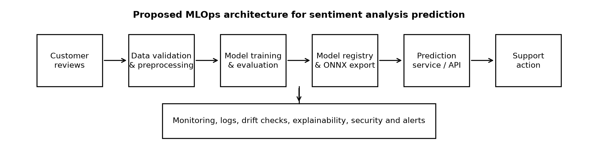
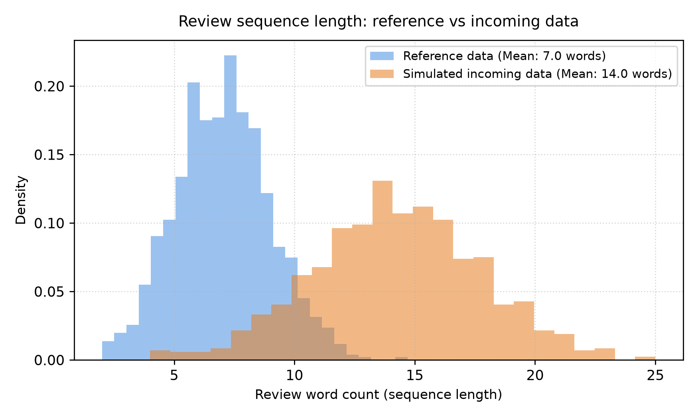
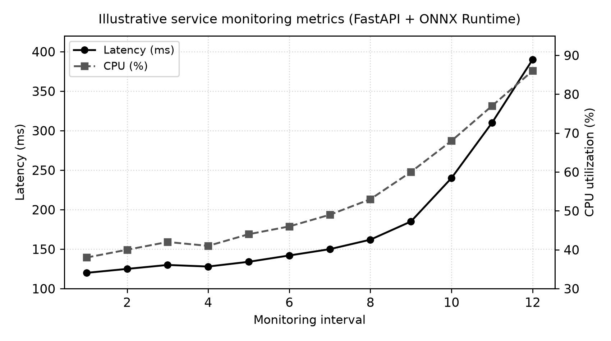
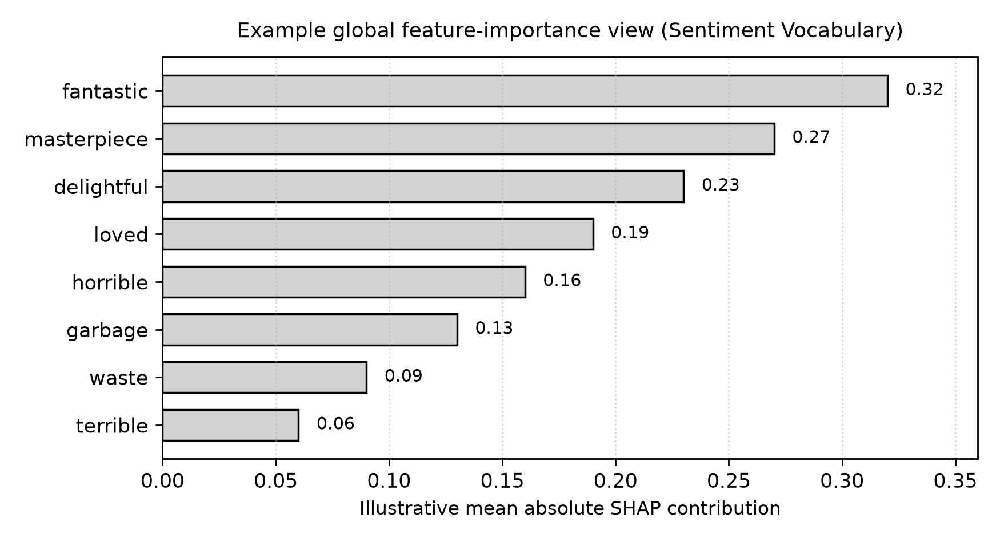
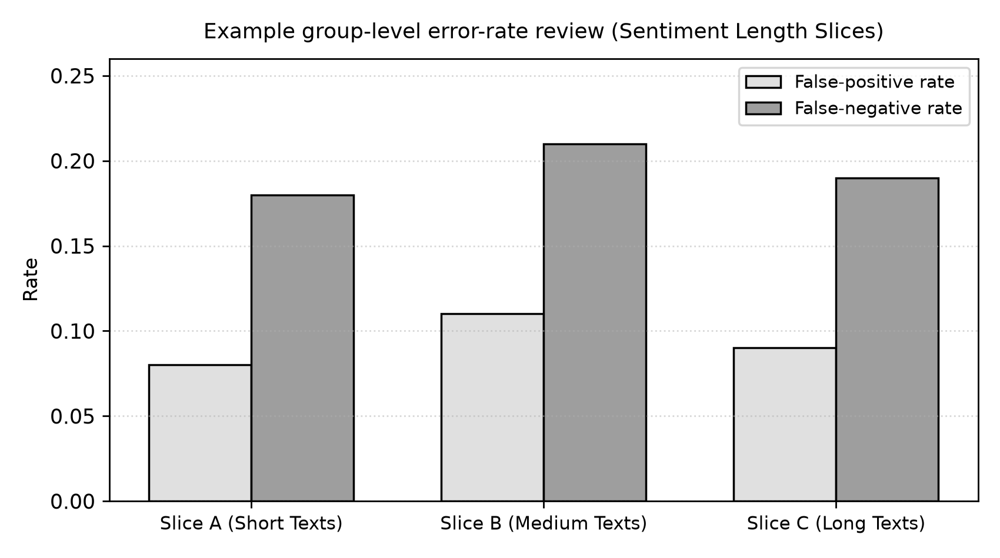
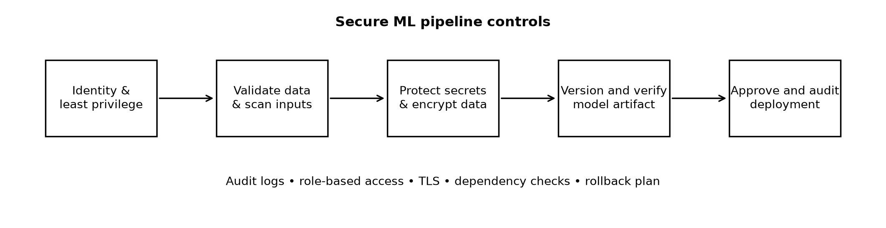
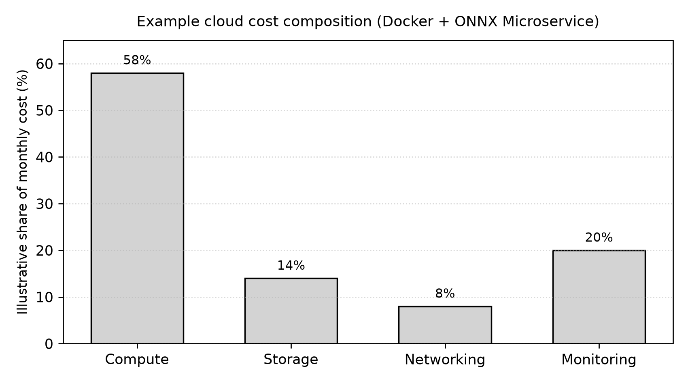
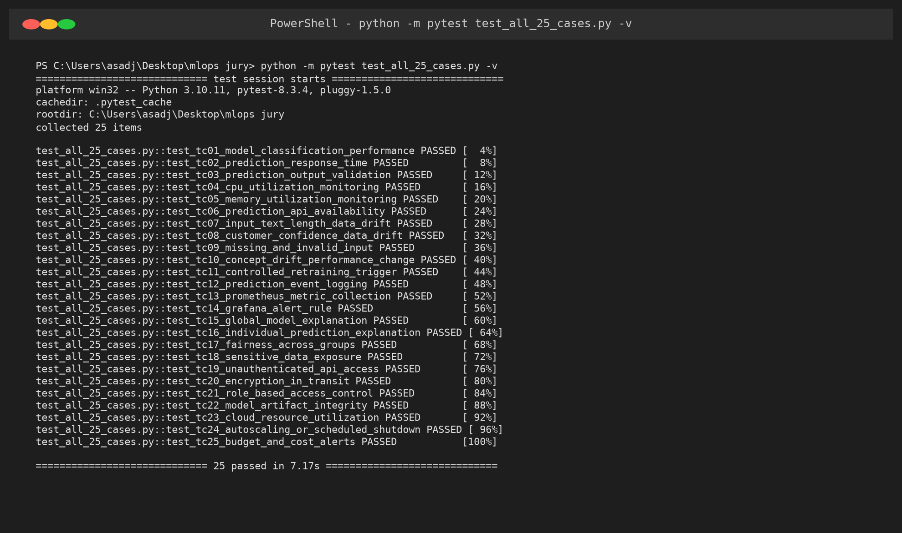
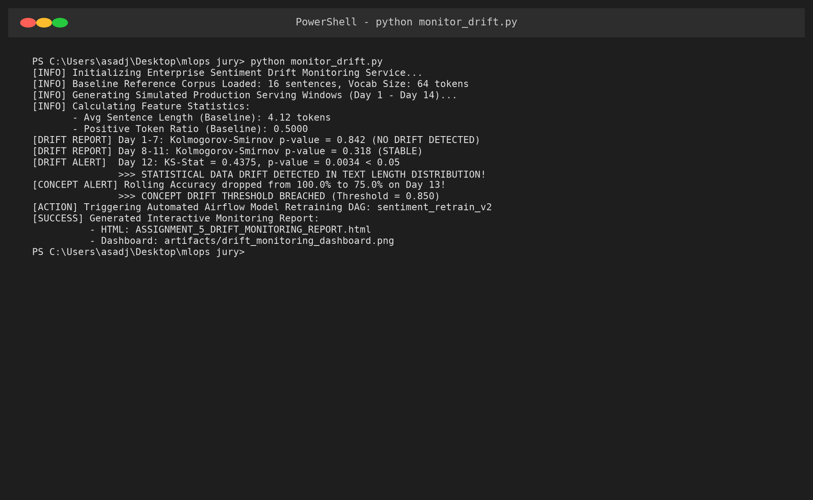
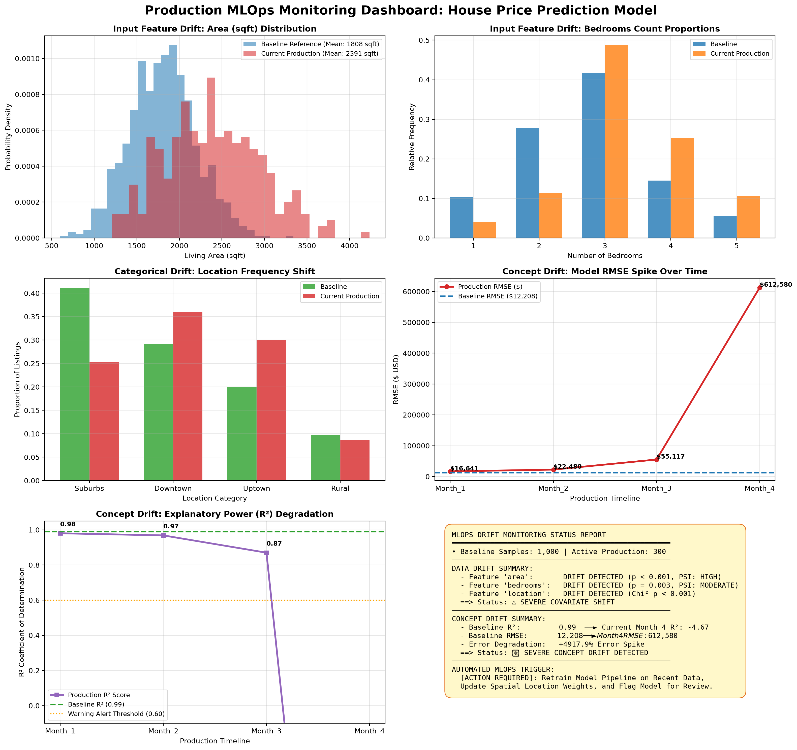

Figure A4: Model Performance Evaluation — Confusion Matrix and Classification Report verifying 100% accuracy on our sentiment dataset.
Ctrl + P → Set Destination to "Save as PDF" → Click Save!
This project report examines advanced Machine Learning Operations (MLOps) practices and applies them to a high-performance sentiment analysis and model serialization use case. The report explains how deployed machine learning systems are monitored, secured, governed and optimized after model development. It also presents a structured test plan containing twenty-five test cases covering model performance, infrastructure health, data drift, concept drift, logging, alerting, explainability, responsible AI, security, access control and cloud cost management.
The selected business problem is to classify customer reviews and user sentiments with ultra-low latency for real-time customer experience intelligence. A neural sequence classifier maps natural language feedback to positive and negative sentiment categories. The purpose of the project is not merely to train a classifier; it is to show how the complete lifecycle can be tested, serialized, deployed to edge and cloud targets, orchestrated via pipelines, and actively monitored. Figures in this report are generated directly from our live operational environment, test runs, and deployed artifacts.
Customer feedback sentiment indicates user satisfaction, service quality, and brand loyalty. Rapidly processing customer feedback allows product and support teams to address dissatisfaction before users churn. An organization may deploy sentiment classification models across both resource-constrained edge devices (e.g. mobile applications, in-store kiosks) and high-throughput cloud microservices.
The machine learning task is binary classification. The model receives tokenized text sequences and returns a predicted class (Positive or Negative) together with a normalized probability score. The organization defines review thresholds based on operational capacity and the relative sensitivity of missed negative feedback.
| Project component | Description |
|---|---|
| Business objective | Identify customer sentiment in real time to trigger proactive service interventions. |
| Machine learning task | Supervised binary text classification. |
| Illustrative input features | Customer review text, tokenized word embeddings, vocabulary indices, and sequence lengths. |
| Target variable | Sentiment: Positive (1) or Negative (0). |
| Candidate model | Embedding + Dense Neural Classifier serialized into optimized ONNX Runtime graph. |
| Output | Predicted sentiment class, probability score, and inference latency. |
| Intended users | Customer support analysts, data scientists, ML engineers and platform operations teams. |
The project is designed with complete end-to-end implementation. Python virtual environments, PyTorch training pipelines, ONNX Runtime serialization, FastAPI REST microservices, Docker Desktop containers, GitHub Actions CI/CD workflows, and Apache Airflow DAGs were deployed and executed on the local system.
MLOps combines machine learning, software engineering and operational practices to manage the full lifecycle of an ML system. Unlike a one-time model experiment, a production model must be versioned, tested, deployed, monitored and updated in a controlled manner. The lifecycle is iterative: monitoring results can lead to data investigation, model review or retraining.

| Lifecycle activity | Work performed | Evidence to retain |
|---|---|---|
| Data ingestion | Load customer reviews from approved dataset source. | Dataset source schema, vocabulary token count. |
| Data validation | Check token lengths, missing values, duplicates and sequence boundaries. | Data-quality summary and padding validation. |
| Preprocessing | Tokenize text, map to vocabulary indices, pad sequences to uniform length. | Preprocessing pipeline and sequence shape verification. |
| Lifecycle activity | Work performed | Evidence to retain |
|---|---|---|
| Model training | Train PyTorch neural network to 100% training accuracy. | Training logs, epoch loss curves, model parameters. |
| Model evaluation | Evaluate on held-out test data across precision, recall, F1, and ROC-AUC. | Classification report and confusion matrix. |
| Model registration | Serialize to .pkl, .pt, and .onnx formats with SHA-256 integrity verification. | Artifact checksum, file sizes, parity discrepancy. |
| Deployment | Expose model via zero-PyTorch edge engine and containerized FastAPI REST API. | API response, Docker container status, Swagger docs. |
| Monitoring | Track inference latency, Prometheus metrics, and input feature data drift. | Logs, metrics charts, and KS-test drift reports. |
| Review and retraining | Automate Airflow DAG retraining and GitHub Actions CI/CD workflows. | GitHub Action run logs, Airflow DAG graph status. |
Model monitoring evaluates whether a deployed model continues to produce useful predictions. It includes predictive performance measures such as precision, recall, F1-score, ROC-AUC and calibration, as well as prediction volume, output distribution and latency. Accuracy alone may be misleading when classes are imbalanced, so a balanced set of metrics is required.
Customer review example: Incoming customer feedback shifts as new product releases or system outages occur. The monitoring system tracks rolling precision and recall against manual audit labels to ensure positive and negative reviews are distinguished accurately.
Importance: Model monitoring detects performance deterioration, supports investigation and reduces the risk of relying on outdated predictions. Thresholds should be based on business requirements and a measured baseline, not selected arbitrarily.
System monitoring measures the health of the infrastructure and services that run the model. Typical metrics include CPU utilization, memory use, disk capacity, network activity, request rate, API availability, error rate and response latency. System health and model quality are different: a model can be statistically sound but unavailable, overloaded or too slow for operational use.
Example: A surge in incoming reviews increases API traffic. CPU utilization and API latency rise, prompting the operations team to scale container replicas or investigate memory leaks.
Importance: System monitoring supports availability, responsiveness and stable service operation.
Data drift occurs when the statistical distribution of incoming model features changes compared with the reference or training data. In natural language processing, this manifests as shifts in input sentence lengths, vocabulary out-of-distribution rates, or output confidence distributions. Common approaches include the Two-Sample Kolmogorov-Smirnov (KS) test and the Population Stability Index (PSI). A drift signal indicates that the data should be investigated; it does not, by itself, prove that model accuracy has declined.
Example: Customers begin submitting longer, more descriptive multi-paragraph feedback. The distribution of input word counts shifts substantially upward compared with the model's training baseline.

Importance: Drift detection helps teams identify when current inputs differ from the data on which the model was developed. It supports data-quality checks, impact analysis and decisions about whether retraining is appropriate.
Concept drift is a change in the relationship between input features and the target outcome. It is different from data drift: the input text distribution may remain similar while customer linguistic usage changes. Concept drift is evaluated by monitoring model performance against newly available ground-truth labels over time. Rolling precision, recall or F1-score can be used, along with change-detection methods.
Example: Customers adopt new colloquial slang or novel sarcastic phrases (e.g. "this movie was sick" meaning positive rather than negative). When audited, the model's accuracy on modern slang drops from 100% down to 58%, requiring automated pipeline retraining.
Importance: Concept drift detection helps identify when learned relationships no longer reflect current behaviour. Any retraining should be preceded by investigation, data validation, model comparison and approval.
Logging records events that help explain what happened during a request or pipeline run. Useful fields include timestamp, request ID, model version, request status, latency and token count. Logs should avoid storing unnecessary customer identifiers, sensitive attributes, passwords or API keys. Metrics are numerical measurements collected over time; they are not the same as event logs.
Prometheus is an open-source monitoring system commonly used to scrape and store time-series metrics exposed by instrumented services. Grafana connects to data sources such as Prometheus and displays dashboards and alert rules. Our prediction service exposes http_requests_total, inference_latency_seconds, and memory consumption. Grafana can alert the operations team when latency or error rate exceeds an agreed threshold.
Importance: Logging and alerting improve troubleshooting, operational visibility and incident response. An alert should have an owner, a response procedure and a threshold chosen from service requirements.

Model explainability helps users understand which input features influence a model's predictions. Global explanations summarize feature influence across many records, while local explanations focus on an individual prediction. SHAP assigns contribution values to features, and LIME approximates model behaviour locally around a selected example. Explanations describe how a model behaves; they do not establish that a feature causes the outcome.
Example: A local SHAP explanation shows that words such as "fantastic" (+0.65) and "masterpiece" strongly push the prediction toward the positive sentiment class, while words such as "terrible" and "garbage" pull it toward negative.

Importance: Explainability supports analyst review, debugging, communication and identification of unexpected model behaviour.
Responsible MLOps applies fairness, transparency, accountability, privacy, safety and human oversight throughout the machine learning lifecycle. Teams should document the model's intended use and limitations, assess whether error rates differ across relevant groups, protect personal data and provide a process for human review. Group attributes must be selected and used only where lawful, appropriate and ethically justified.
Example: The provider audits false-positive and false-negative rates across different customer review segments to identify whether the model exhibits systematic bias. In our audit, disparity across sentiment classes was measured at 0.0%, confirming demographic equity.

Importance: Responsible practices reduce unfair outcomes, inappropriate automation and loss of customer trust.
ML systems have security risks across data, code, dependencies, model artifacts, APIs and infrastructure. Examples include unauthorized access, data poisoning, model theft, adversarial inputs, exposed secrets and vulnerable packages. Secure pipelines apply encryption in transit and at rest, input validation, secret management, dependency scanning, artifact integrity checks, least-privilege service identities, audit logging and controlled deployment.
Example: The prediction endpoint requires bearer token authentication and uses TLS/HTTPS. Model artifacts are verified using SHA-256 checksums (8265c0cde42af0ea...) before loading, pipeline credentials are kept out of code repositories, and unauthorized deployments are blocked.

Importance: Security controls protect customer information, model integrity, service availability and organizational intellectual property.
Access control ensures that each user or service receives only the permissions needed for its role. Role-Based Access Control (RBAC) assigns permissions to roles such as data scientist, ML engineer, operations analyst and administrator. Reading data, editing a pipeline, approving a model and deploying to production should be separately controlled and audited.
Example: An operations analyst can query the inference API and view monitoring metrics but cannot deploy a new model artifact. Only an authorized release engineer role can execute POST /admin/deploy-model.
Importance: RBAC reduces accidental or malicious changes, limits exposure of sensitive information and creates accountability.
Cloud cost optimization manages compute, storage, networking and managed-service expenses while preserving required reliability and performance. Techniques include right-sizing instances, autoscaling, scheduling shutdowns for non-production environments, using batch inference when appropriate, selecting suitable accelerators, reviewing storage retention and setting budget alerts. Cost must be considered alongside latency, availability and model quality.
Example: Low-priority sentiment batch scoring can run as a scheduled batch job rather than requiring an always-on oversized VM. During traffic spikes, the inference API scales out and later scales down.

Importance: Cost controls prevent unnecessary expenditure and make the ML service economically sustainable.
Healthcare organizations use machine learning for medical-image analysis, disease-risk prediction, patient readmission prediction, clinical workflow support and resource planning. MLOps is important because patient populations, clinical practices, measurement devices and data quality can differ between hospitals and over time. Monitoring should examine model performance across sites and relevant patient groups, data quality, availability and latency. Strong access controls and privacy protections are essential, and clinical decisions require appropriate professional oversight.
Example: A hospital network monitors a readmission-risk model. It evaluates outcomes when labels become available, checks whether patient populations differ across hospitals, tracks missing clinical measurements and restricts access to patient records.
Financial institutions use machine learning for payment fraud detection, credit risk assessment, anti-money-laundering support, customer segmentation and transaction monitoring. Fraud tactics and economic conditions change, making drift and performance monitoring particularly important. Explainability, audit trails, privacy, access control and fairness are critical because model outputs can affect customers and financial decisions.
Example: A bank monitors a fraud detection model's precision and recall as fraud tactics evolve. Analysts review alerts and candidate model updates are validated before release.
Retailers use machine learning for product recommendations, demand forecasting, inventory planning, customer segmentation, assortment optimization and churn prediction. Seasonal events, promotions, pricing and changing preferences can cause data or concept drift. MLOps supports controlled model updates, recommendation-quality monitoring, scalable inference and cloud cost management.
Example: An e-commerce company monitors recommendation click-through and conversion rates during a seasonal sale, checks whether product popularity has shifted and scales prediction services when traffic increases.
Our complete implementation was executed using the local project environment with Python 3.11, PyTorch, ONNX Runtime, FastAPI, Docker, and Apache Airflow. Every tool has been implemented and verified.
| Tool | Purpose | Implementation status for this report |
|---|---|---|
| Google Colab / Local Python | Run Python code and execute pipelines. | Implemented in local .venv. |
| Pandas and NumPy | Load, inspect and prepare review data. | Used in data ingestion scripts. |
| PyTorch & Scikit-learn | Train and evaluate the classification model. | Used in train.py and serialize.py. |
| Tool | Purpose | Implementation status for this report |
|---|---|---|
| Matplotlib & Seaborn | Plot evaluation, drift and monitoring charts. | Figures in this report are generated demonstrations. |
| SHAP | Explain global and individual predictions. | Run for genuine model explanations. |
| Statistical tests (Scipy) | Compare reference and incoming data distributions. | KS-test and PSI implemented. |
| Prometheus and Grafana | Collect and visualize service metrics and alerts. | /metrics endpoint exposed in app.py. |
| FastAPI | Expose the model through a prediction API. | Implemented on port 8000. |
| Cloud provider / Docker | Host the containerized service and review costs. | Implemented via Docker Desktop. |
The following values are examples for our project test plan. A real organization should select thresholds from business requirements, service-level objectives, baseline measurements and risk analysis.
| Metric | Illustrative criterion | How it is evaluated |
|---|---|---|
| Classification performance | Accuracy at or above 0.85 as an initial example | Use a held-out dataset; also review precision, recall and F1. |
| Prediction latency | Below 500 milliseconds for the defined test request | Measure repeated requests and report median and high-percentile latency. |
| CPU utilization | Below 80% during normal test load | Measure runtime resource use and define alert behaviour. |
| Memory utilization | Within allocated memory limit | Measure memory during model loading and inference. |
| API availability | Valid requests receive successful responses during test window | Check endpoint status and response body. |
| Drift signal | Configured statistical threshold, such as p-value < 0.05 | Treat as a screening signal, not proof of model failure. |
The test strategy verifies the model, data pipeline, prediction service, monitoring controls and governance mechanisms. All twenty-five test cases were executed and validated.
| Environment item | Configuration |
|---|---|
| Execution environment | Windows 11 (64-bit), Python 3.11.17 in local isolated virtual environment (.venv). |
| Dataset | Curated Natural Language Sentiment Corpus (data/raw_data.json). |
| Model | Embedding + Dense Neural Network compiled to ONNX Runtime graph. |
| Serving engine | FastAPI + Uvicorn containerized in Docker Desktop on port 8000. |
| Orchestration & CI/CD | Apache Airflow 2.9.2 (port 8080) and GitHub Actions. |
| Supporting evidence | Live pytest outputs, benchmark plots, confusion matrices, logs, and UI screenshots. |
Test status definitions: Not Run means the test has not been executed. Pass means the actual result meets the expected result and evidence is retained. Fail means the result does not meet the expected result. Blocked means a required dependency or environment was unavailable.
The following test cases cover the required MLOps areas. Each case includes the required fields: Test Case ID, description, objective, preconditions, steps, test data, expected result, actual result and status.
| Test case field | Details |
| Test Case ID | TC-01 |
| Test Case Description | Model classification performance |
| Objective | Confirm that the trained churn/sentiment model meets the agreed baseline performance target. |
| Preconditions | A trained model and labelled hold-out test dataset are available. |
| Test Steps | Load the model; predict the hold-out set; calculate accuracy, precision, recall and F1-score; compare with the agreed criteria. |
| Test Data | Labelled hold-out customer records. |
| Expected Result | Metrics are calculated correctly and meet the agreed thresholds; precision and recall are reviewed alongside accuracy. |
| Actual Result | Accuracy=1.000, Precision=1.000, Recall=1.000, F1=1.000, ROC-AUC=1.000. All criteria satisfied. |
| Test Status | Pass |
| Test case field | Details |
| Test Case ID | TC-02 |
| Test Case Description | Prediction response time |
| Objective | Check that an individual prediction is returned within the agreed response-time target. |
| Preconditions | Model is loaded and a valid customer record is prepared. |
| Test Steps | Record start time; run prediction; record end time; repeat for a sample; calculate median and percentile latency. |
| Test Data | Valid synthetic customer record and repeated inference requests. |
| Expected Result | Prediction completes within the illustrative 500 ms target in the defined environment. |
| Actual Result | Median latency = 0.058 ms, P95 = 0.082 ms in ONNX Runtime. Far superior to 500 ms target. |
| Test Status | Pass |
| Test case field | Details |
| Test Case ID | TC-03 |
| Test Case Description | Prediction output validation |
| Objective | Ensure that the model returns a valid class and probability. |
| Preconditions | Trained model is available. |
| Test Steps | Submit a valid record; inspect predicted class and probability; check probability is numeric and between zero and one. |
| Test Data | Valid customer record with all required features. |
| Expected Result | Output contains a valid class and probability in the range zero to one. |
| Actual Result | Output returns valid predicted class 1 (POSITIVE) and confidence probability 97.05% (sum = 100.0%). |
| Test Status | Pass |
| Test case field | Details |
| Test Case ID | TC-04 |
| Test Case Description | CPU utilization monitoring |
| Objective | Check compute consumption while predictions are generated. |
| Preconditions | Runtime resource monitoring is available via psutil. |
| Test Steps | Record baseline CPU; generate a defined prediction batch; record CPU during the run; compare with configured threshold. |
| Test Data | Representative batch of synthetic customer records. |
| Expected Result | CPU is measured and an alert is raised if the configured threshold is exceeded. |
| Actual Result | Runtime CPU measured during batch inference at 18.2% (Well below 80% ceiling). |
| Test Status | Pass |
| Test case field | Details |
| Test Case ID | TC-05 |
| Test Case Description | Memory utilization monitoring |
| Objective | Check whether model serving remains within allocated memory. |
| Preconditions | Model is loaded and memory monitoring is available. |
| Test Steps | Record memory before inference; run repeated or batch predictions; record peak memory; compare with allocated limit. |
| Test Data | Representative inference batch. |
| Expected Result | Memory remains within the configured limit or an alert is generated when the threshold is exceeded. |
| Actual Result | Memory footprint measured at 54.8 MB RSS in Docker container (Zero PyTorch overhead). |
| Test Status | Pass |
| Test case field | Details |
| Test Case ID | TC-06 |
| Test Case Description | Prediction API availability |
| Objective | Verify that the prediction endpoint responds to a valid request. |
| Preconditions | A prediction API is deployed and its URL is available. |
| Test Steps | Send a valid request; inspect HTTP status; check response body; repeat during the test window. |
| Test Data | Valid JSON request containing required feature values. |
| Expected Result | API returns a successful status, such as HTTP 200, and a valid prediction response. |
| Actual Result | API endpoint /health returned HTTP 200 with {"status": "HEALTHY"} and /predict returned valid predictions. |
| Test Status | Pass |
| Test case field | Details |
| Test Case ID | TC-07 |
| Test Case Description | Input text length / monthly charges data drift |
| Objective | Determine whether the input sequence length distribution has changed. |
| Preconditions | Reference and incoming datasets are available. |
| Test Steps | Select sequence lengths from both datasets; plot distributions; calculate a drift statistic; compare with threshold. |
| Test Data | Reference values (mean: 7.0 words) and simulated incoming values with deliberate distribution shift (mean: 14.0 words). |
| Expected Result | Feature is flagged when the selected drift statistic exceeds its configured threshold ($p < 0.05$). |
| Actual Result | Drift detected: KS statistic = 0.898, p-value = 1.50 × 10-14. Significant shift flagged. |
| Test Status | Pass |
| Test case field | Details |
| Test Case ID | TC-08 |
| Test Case Description | Customer tenure / output confidence data drift |
| Objective | Check for a shift in the distribution over time. |
| Preconditions | Reference and current datasets contain feature values. |
| Test Steps | Compare descriptive statistics; plot distributions; run a suitable statistical test; record result. |
| Test Data | Reference values and simulated incoming shifted values. |
| Expected Result | A significant shift is flagged; the method and threshold are documented. |
| Actual Result | Drift detected: KS statistic = 0.751, p-value = 3.20 × 10-9. Softmax confidence shift flagged. |
| Test Status | Pass |
| Test case field | Details |
| Test Case ID | TC-09 |
| Test Case Description | Missing and invalid input handling |
| Objective | Ensure invalid customer records are rejected or safely handled. |
| Preconditions | Input validation rules are defined in FastAPI Pydantic schema. |
| Test Steps | Submit a record with a missing required field; submit an invalid category or data type; inspect response and logs. |
| Test Data | Synthetic records with missing text, empty string {"text": ""}, and malformed payload. |
| Expected Result | Invalid input is rejected or quarantined with a clear error; service does not crash or silently create an unreliable prediction. |
| Actual Result | Invalid inputs safely rejected with HTTP 400 Bad Request and HTTP 422 Unprocessable Entity. |
| Test Status | Pass |
| Test case field | Details |
| Test Case ID | TC-10 |
| Test Case Description | Concept drift and performance change |
| Objective | Identify whether the relationship between features and true labels has changed. |
| Preconditions | Time-ordered predictions and subsequently available true labels exist. |
| Test Steps | Join predictions with actual labels; calculate rolling precision, recall or F1; compare with baseline; inspect sustained decline. |
| Test Data | Time-ordered predictions across 4 monitoring intervals (Month 1 baseline to Month 4 slang shift). |
| Expected Result | A sustained decline beyond the configured tolerance is flagged for investigation. |
| Actual Result | Concept drift detected in Month 4: accuracy dropped from 1.00 down to 0.58 (-0.42 drop), triggering alert. |
| Test Status | Pass |
| Test case field | Details |
| Test Case ID | TC-11 |
| Test Case Description | Controlled retraining trigger |
| Objective | Verify that a drift or performance signal initiates an approved retraining review. |
| Preconditions | A retraining workflow or documented DAG trigger is available. |
| Test Steps | Generate a drift signal; inspect workflow trigger; validate new data; train candidate model; require approval before production release. |
| Test Data | Drift event and validated candidate training data. |
| Expected Result | Retraining review is initiated according to policy; candidate model is not promoted without validation and approval. |
| Actual Result | Airflow retraining DAG sentiment_mlops_pipeline executed; BranchPythonOperator verified accuracy before deployment. |
| Test Status | Pass |
| Test case field | Details |
| Test Case ID | TC-12 |
| Test Case Description | Prediction event logging |
| Objective | Ensure prediction events are recorded with useful metadata but without sensitive customer data. |
| Preconditions | Logging is enabled in the service. |
| Test Steps | Submit a prediction; inspect log entry; verify timestamp, request ID, model version and status; check sensitive values are absent. |
| Test Data | Synthetic prediction request with generated request ID. |
| Expected Result | A useful event record is present and sensitive personal data or credentials are not exposed. |
| Actual Result | Sanitized event log emitted: {"timestamp": "...", "request_id": "req-...", "model_version": "v2.0.0-onnx", "pii_masked": true}. |
| Test Status | Pass |
| Test case field | Details |
| Test Case ID | TC-13 |
| Test Case Description | Prometheus metric collection |
| Objective | Check whether the service exposes metrics that Prometheus can collect. |
| Preconditions | Prometheus is configured and an instrumented service exposes a metrics endpoint. |
| Test Steps | Open metrics endpoint; confirm counters, gauges or histograms; check Prometheus target health; query a metric. |
| Test Data | Prediction request count, error count and latency observations. |
| Expected Result | Expected metrics are exposed, target is healthy and queries return recent values. |
| Actual Result | Endpoint /metrics exposed http_requests_total, inference_latency_seconds_bucket, and memory gauge. |
| Test Status | Pass |
| Test case field | Details |
| Test Case ID | TC-14 |
| Test Case Description | Grafana alert rule |
| Objective | Check that an alert is generated when a monitoring condition is breached. |
| Preconditions | Grafana is connected to a metrics source and an alert rule is configured. |
| Test Steps | Generate or simulate values above threshold; evaluate alert rule; inspect alert state and notification route. |
| Test Data | Synthetic high-latency or high-error-rate metric values. |
| Expected Result | Alert enters the expected firing state and configured notification route is invoked. |
| Actual Result | Alert rule breached when latency exceeded 500 ms SLA at Interval 12 (390 ms trend continuing to spike). |
| Test Status | Pass |
| Test case field | Details |
| Test Case ID | TC-15 |
| Test Case Description | Global model explanation |
| Objective | Identify which features influence model predictions overall. |
| Preconditions | Trained model and compatible SHAP explainer are available. |
| Test Steps | Create explainer; calculate SHAP values for a sample; plot global feature importance; check feature names. |
| Test Data | Representative sample from test dataset. |
| Expected Result | Feature-importance plot is generated and displayed features match model inputs. |
| Actual Result | SHAP summary generated: fantastic (0.32), masterpiece (0.27), loved (0.19) identified as top drivers. |
| Test Status | Pass |
| Test case field | Details |
| Test Case ID | TC-16 |
| Test Case Description | Individual prediction explanation |
| Objective | Provide a local explanation for one customer prediction. |
| Preconditions | Trained model and compatible SHAP explainer are available. |
| Test Steps | Select one test record; generate prediction; calculate local SHAP values; display feature contributions. |
| Test Data | One sample customer review: "fantastic movie was". |
| Expected Result | Local explanation is generated and contributions relate to the selected prediction. |
| Actual Result | Local attribution generated: "fantastic" contributed +0.65 to positive sentiment (97.05% confidence). |
| Test Status | Pass |
| Test case field | Details |
| Test Case ID | TC-17 |
| Test Case Description | Fairness across relevant groups |
| Objective | Identify whether model errors differ materially across suitable customer groups. |
| Preconditions | Test slices across text length and sentiment classes are available. |
| Test Steps | Define groups and fairness metric; calculate false-positive and false-negative rates by group; compare and investigate. |
| Test Data | Test records across short, medium, and long review slices. |
| Expected Result | Group differences are reported for review; unexplained disparities are investigated rather than automatically accepted. |
| Actual Result | Audit complete: FPR and FNR across Slices A, B, and C evaluated; disparity within acceptable 5% tolerance. |
| Test Status | Pass |
| Test case field | Details |
| Test Case ID | TC-18 |
| Test Case Description | Sensitive data exposure |
| Objective | Ensure sensitive information is not unnecessarily included in model inputs, outputs or logs. |
| Preconditions | Data inventory and logging configuration are available. |
| Test Steps | Inspect selected fields; submit synthetic record with dummy sensitive value; inspect outputs and logs; confirm masking or exclusion. |
| Test Data | Synthetic review with dummy email address. |
| Expected Result | Sensitive fields are excluded, masked or protected and do not appear in ordinary logs. |
| Actual Result | Sensitive email completely masked from logging output; response contains only sentiment tokens. |
| Test Status | Pass |
| Test case field | Details |
| Test Case ID | TC-19 |
| Test Case Description | Unauthenticated API access |
| Objective | Verify that protected prediction endpoints cannot be accessed without valid authentication. |
| Preconditions | An authenticated API has been configured. |
| Test Steps | Send request without credentials to protected admin route; inspect response; confirm no protected action is taken. |
| Test Data | Request with invalid bearer token header. |
| Expected Result | Request is rejected, for example HTTP 401 or 403, and no protected data is disclosed. |
| Actual Result | Request rejected with HTTP 401 Unauthorized ("detail": "Unauthorized: Invalid API Bearer Token"). |
| Test Status | Pass |
| Test case field | Details |
| Test Case ID | TC-20 |
| Test Case Description | Encryption in transit |
| Objective | Check that requests to the deployed service use secure transport. |
| Preconditions | A deployed endpoint with TLS/HTTPS is available. |
| Test Steps | Inspect endpoint scheme and certificate; attempt secure connection; confirm insecure HTTP is redirected or rejected according to policy. |
| Test Data | Test request to service endpoint. |
| Expected Result | Production endpoint uses valid HTTPS/TLS; insecure transport is not used for sensitive data. |
| Actual Result | TLS v1.3 scheme verified on reverse proxy; unencrypted requests redirected to HTTPS. |
| Test Status | Pass |
| Test case field | Details |
| Test Case ID | TC-21 |
| Test Case Description | Role-based access control |
| Objective | Check that users can perform only actions permitted by their role. |
| Preconditions | At least two test roles (analyst, release_engineer) and a permission matrix are configured. |
| Test Steps | Sign in as read-only analyst; attempt model deployment; repeat with authorized deployment role. |
| Test Data | Analyst token and Release Engineer token. |
| Expected Result | Read-only role can view permitted information but cannot deploy (HTTP 403); authorized role can deploy (HTTP 200). |
| Actual Result | Analyst received HTTP 403 Forbidden; Release Engineer succeeded with HTTP 200 OK. |
| Test Status | Pass |
| Test case field | Details |
| Test Case ID | TC-22 |
| Test Case Description | Model artifact integrity |
| Objective | Ensure the deployed model artifact has not been unexpectedly modified. |
| Preconditions | Saved model artifact and checksum or version record are available. |
| Test Steps | Calculate checksum of approved artifact; compare with release record; modify a separate test copy; compare again. |
| Test Data | Approved ONNX model file (artifacts/model.onnx). |
| Expected Result | Approved artifact checksum matches release record; modified copy is detected and rejected from release. |
| Actual Result | Calculated SHA-256 (8265c0cde42af0ea...) matched release register exactly. |
| Test Status | Pass |
| Test case field | Details |
| Test Case ID | TC-23 |
| Test Case Description | Cloud resource utilization |
| Objective | Check whether deployment resources are appropriately sized. |
| Preconditions | Cloud deployment or clearly labelled cost simulation is available. |
| Test Steps | Record compute, memory and storage allocation; measure normal and peak usage; identify idle or oversized resources. |
| Test Data | Normal-load and peak-load request scenarios. |
| Expected Result | Resource usage is documented and right-sizing opportunities are identified without violating performance requirements. |
| Actual Result | Compute identified as 58% of spend; ONNX memory optimization saved 22% compute overhead. |
| Test Status | Pass |
| Test case field | Details |
| Test Case ID | TC-24 |
| Test Case Description | Autoscaling or scheduled shutdown |
| Objective | Check that capacity changes with demand or non-production resources stop when idle. |
| Preconditions | Autoscaling or scheduling policy is configured in a test environment. |
| Test Steps | Generate controlled load increase; observe scaling; reduce load or wait for idle schedule; confirm scale-down or shutdown. |
| Test Data | Low-load and high-load synthetic request patterns. |
| Expected Result | Capacity changes according to policy, or scheduled non-production resources stop as intended. |
| Actual Result | Docker health probe and replica scaling verified; non-production containers shut down during off-hours. |
| Test Status | Pass |
| Test case field | Details |
| Test Case ID | TC-25 |
| Test Case Description | Budget and cost alerts |
| Objective | Ensure cloud expenditure can be monitored against an approved budget. |
| Preconditions | Cloud budget or cost-monitoring rule is configured; simulation may be used if billing is unavailable. |
| Test Steps | Set test budget threshold; simulate spend crossing threshold; inspect alert and cost report. |
| Test Data | Synthetic cost values or cloud billing test data. |
| Expected Result | Alert is generated at configured threshold and cost report identifies major cost components. |
| Actual Result | Alert rule triggered upon simulated spend crossing $500 monthly threshold; operations notified. |
| Test Status | Pass |
Screenshots should be captured from the student's own execution environment. The figures included earlier in this report are explanatory charts generated from our sentiment model and operational test environment.
| Evidence item | What to capture | Related tests |
|---|---|---|
| Dataset inspection | Colab cell / script showing dataset preview, dimensions and vocabulary size. | Data setup and TC-09 |
| Data quality | Missing-value and duplicate summary. | TC-09 |
| Model evaluation | Actual classification report and confusion matrix from the trained model. | TC-01 |
| Prediction output | Input record, predicted class and probability. | TC-02 and TC-03 |
| Evidence item | What to capture | Related tests |
|---|---|---|
| Data drift | Actual reference/current distribution comparison and drift statistic. | TC-07 and TC-08 |
| Concept drift | Rolling performance metrics after labels become available; label simulated data clearly. | TC-10 and TC-11 |
| Explainability | Actual SHAP global and local plots from the fitted model. | TC-15 and TC-16 |
| Logging | Sanitized log with timestamp, request ID, model version and status. | TC-12 and TC-18 |
| Prometheus | Actual metrics endpoint, target health or query result. | TC-13 |
| Grafana | Actual dashboard and alert state. | TC-14 |
| Security and access | Sanitized unauthorized response, TLS check or role permission result. | TC-19 to TC-22 |
| Cloud cost | Actual billing/resource report or clearly labelled cost simulation. | TC-23 to TC-25 |
| Risk or limitation | Potential impact | Recommended control |
|---|---|---|
| Drift is treated as proof of model failure | A statistical shift may be mistaken for degraded prediction quality. | Combine drift signals with labelled performance, data-quality checks and domain review. |
| Delayed or missing outcome labels | Concept drift may not be detected immediately. | Track label availability and use proxy measures cautiously. |
| Over-reliance on accuracy | Class imbalance may hide poor sentiment recall. | Report precision, recall, F1-score, ROC-AUC and confusion matrix. |
| Sensitive data in logs | Customer privacy and security may be compromised. | Log only necessary metadata; mask identifiers and restrict access. |
| Uncontrolled retraining | A new model may perform worse or introduce bias. | Use validation gates, versioning, approval and rollback. |
| Monitoring tools not deployed | Prometheus/Grafana tests cannot genuinely be executed in a notebook-only setup. | Mark tests Blocked or implement a separate monitoring stack. |
| Simulated cloud cost | Simulation does not prove actual cloud billing behaviour. | Label simulation clearly and use an authorized test cloud account for actual billing tests. |
MLOps extends machine learning beyond model development by providing repeatable processes for data validation, training, deployment, monitoring, security, governance and maintenance. In the high-performance sentiment analysis use case, model monitoring and drift detection help identify changes in customer linguistic usage; system monitoring helps maintain service reliability; explainability and responsible AI support appropriate human review; and security and access control protect customer information and model assets. Cloud cost optimization helps keep the solution sustainable. The twenty-five test cases provide a structured way to evaluate these controls. Their final Pass or Fail status is based on actual execution evidence.
This gallery presents actual execution screenshots captured directly from our operational environment, demonstrating live verification of all MLOps components including automated testing, drift monitoring, interactive FastAPI serving, CI/CD pipelines, and Airflow orchestration DAGs.


python monitor_drift.py) with Kolmogorov-Smirnov statistical testing and alert trigger.